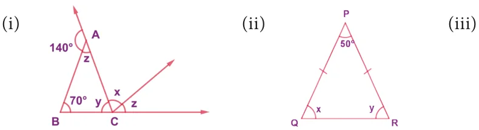
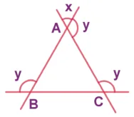
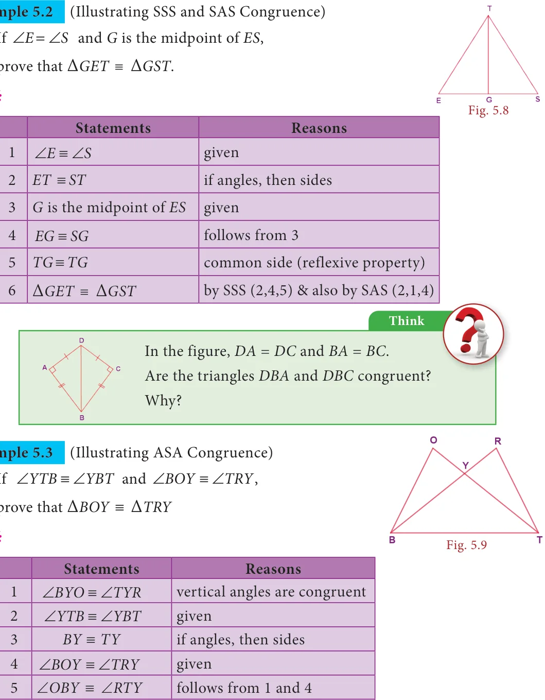
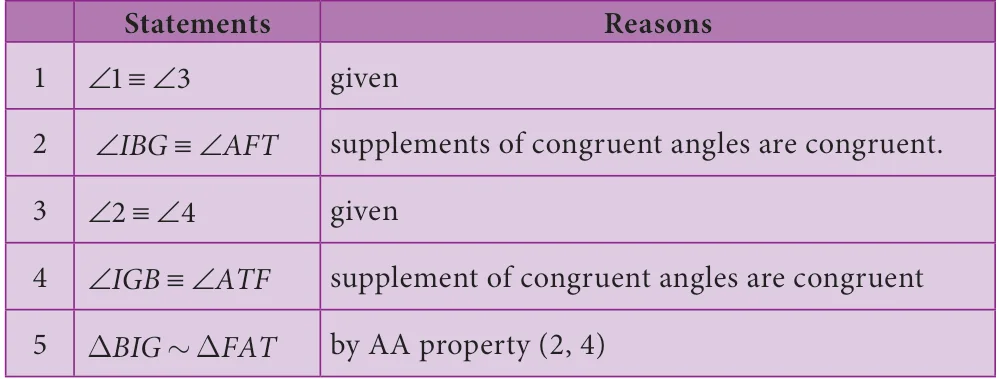

Congruent figures are exactly the same in shape and size. In other words, shapes are congruent if one fits exactly over the other.
Examples

Similar figures mathematically have the same shape but different sizes. Two geometrical figures are said to be similar () if the measures of one to the corresponding measures of the other are in a constant ratio. In other words, every part of a photographic enlargement is similar to the corresponding part of the original.
Examples

Try these
Identify the pairs of figures which are similar and congruent and write the letter pairs.
5.2.1 Congruent Triangles
Consider two given triangles PQR and ABC. They are said to be congruent ( \(\equiv\) ) if their corresponding parts are congruent. That is PQ=AB, QR=BC and PR=AC and also \(\angle P = \angle A\), \(\angle Q = \angle B\) and \(\angle R = \angle C\). This is denoted as \(DPQR \equiv DABC\) . Fig. 5.2 There are 4 ways by which one can prove that two triangles are congruent.
- SSS (Side - Side - Side) Congruence

If the three sides of a triangle are congruent to the three sides of another triangle, then the triangles are congruent. That is \(AB = PQ\), \(BC = QR\) and \(AC = PR\)
\(\Rightarrow \triangle ABC \equiv \triangle PQR\). Fig. 5.3
- SAS (Side - Angle - Side) Congruence
If two sides and the included angle (the angle between

them) of a triangle are congruent to two sides and the included angle of another triangle, then the triangles are congruent. Here, \(AC = PQ\), \(\angle A = \angle P\) and \(AB = PR\) and hence \(\triangle ACB \equiv \triangle PQR\). Fig. 5.4
- ASA (Angle-Side-Angle) Congruence

If two angles and the included side of a triangle are congruent to two angles and the included side of another triangle, then the triangles are congruent. Here, \(\angle A = \angle R\), CA=PR and \(\angle C = \angle P\) and hence \(\triangle ABC \equiv \triangle RQP\)
- RHS (Right Angle - Hypotenuse - Side) Congruence
If the hypotenuse and a leg of one right triangle are congruent to the hypotenuse and a leg of another right triangle, then the triangles are congruent. Here,

\(\angle B = \angle Q = 90 ^{\circ}\) , \(BC = QR\) and \(AC = PR\)
(right angle) (leg) (hypotenuse) and hence \(\triangle ABC \equiv \triangle PQR\). Fig. 5.6

Example 5.1
Find the unknowns in the following figures


Solution:
- Now, from Fig. 5.7(i), \(140 ^{\circ} + z = 180 ^{\circ}\) (linear pair)
\(\Rightarrow z = 180 ^{\circ} - 140 ^{\circ} = 40 ^{\circ}\)
Also \(x + z = 70 ^{\circ} + z\) (exterior angle property)
\(\Rightarrow x = 70 ^{\circ}\)
Also \(z + y + 70 ^{\circ} = 180 ^{\circ}\) (angle sum property in D ABC)
\(\Rightarrow 40 ^{\circ} + y + 70 ^{\circ} = 180 ^{\circ}\)
\(\Rightarrow y = 180 ^{\circ} - 110 ^{\circ} = 70 ^{\circ}\)
- Now, from Fig. 5.7(ii), \(PQ = PR\)
Q R (angles opposite to equal sides are equal) \(\Rightarrow x = y\)
\(\Rightarrow x + y + 50 ^{\circ} = 180 ^{\circ}\) (angle sum property in D PQR)
\(\Rightarrow 2x = 130 ^{\circ} \Rightarrow x = 65 ^{\circ} \Rightarrow y = 65 ^{\circ}\)
- Now, from Fig. 5.7(iii), in DABC A x (vertically opposite angles)
Similarly B C x (Why?)
A B C 180 (angle sum property in D ABC)
\(\Rightarrow 3x =180\)
\(\Rightarrow x = 60\)
\(\Rightarrow y =180 - 60 =120\)

Proof:
Proof:
\(\frac{6}{Example 5.4}\) (Illustrating RHS Congruence) If TAP is an isosceles triangle with \(TA = TP\) and \(\angle TSA = 90 ^{\circ}\) .

- Is TAS \(\equiv\) TPS? Why?
- Is \(\angle P = \angle A\)? Why?
- Is \(AS = PS\)? Why? Fig. 5.10
Proof:
- \(TA = TP\) (hypotenuse) and \(\angle TSA = 90\) TS is common (leg) Hence, by RHS congruence, TAS \(\equiv\) TPS
- Given \(TA = TP\) \(\therefore \angle P = \angle A\) (If sides then angles)
- From (i) TAS \(\equiv\) TPS ,
By CPCTC \(AS = PS\)
SSA and ASS properties are not sufficient to prove that two triangles are congruent. This is explained in the given figure. By construction, in triangles ABD and ABC, \(BC = BD = a\). Also, AB and \(\angle BAZ\) are common. But \(AC \ne AD\). So, \(\triangle ABD\) is not congruent to \(\triangle ABC\) and so SSA fails.
5.2.2 Similar Triangles
Consider two given triangles PQR and ABC. They are said to be similar () if their corresponding angles are equal and corresponding sides are proportional. That is \(\angle P = \angle A\), \(\angle Q = \angle B\) and \(\angle R = \angle C\) and also \(PQ = PR = QR\) . This is denoted as DPQRDABC . AB AC BC There are 4 ways by which one can prove that two triangles are Fig. 5.11 similar.

- AAA (Angle - Angle - Angle) or AA (Angle - Angle) Similarity
Two triangles are similar if two angles of one triangle are equal respectively to two angles of the other triangle. In the given figure, \(\angle A = \angle P\), \(\angle B = \angle\) Therefore, \(\triangle ABC\) \(\triangle PQR\).

- SAS (Side - Angle - Side) Similarity Two triangles are similar if two sides of one triangle are proportional to two sides of the other triangle and the included angles are equal. In the given figure, \(\frac{ACAB}{PQPR} =\) and \(\angle A = \angle P\) and Fig. 5.13 hence \(\triangle ACB\) \(\triangle PQR\).
- SSS (Side-Side-Side) Similarity

Two triangles are similar if their corresponding sides are in the same ratio. That is, if \(= =\) , then \(\triangle ABC\) \(\triangle PQR\). \(\frac{ABACBC}{PQPRQR}\)
- RHS (Right Angle - Hypotenuse - Side) Similarity Fig. 5.14
Two right triangles are similar if the hypotenuse and a leg of one triangle are respectively proportional to the hypotenuse

and a leg of the other triangle. That is, if B Q 90 and
\(\frac{ACBC}{PRQR}\) then, \(\triangle ABC\) \(\triangle PQR\).
If \(\triangle ABC\) \(\triangle PQR\), then the corresponding sides to AB, BC and AC of \(\triangle ABC\) are PQ, QR and PR respectively and the corresponding angles to A, B and C are P, Q and R respectively. Naming a triangle has a significance. For example, if \(\triangle ABC\) \(\triangle PQR\) then, \(\triangle BAC\) is not similar to \(\triangle PQR\).
Example 5.5

In the Fig. 5.16, if DPQR DXYZ ,
find a and b.
Solution:
Given that DPQR DXYZ Fig. \(5.16 \therefore\) Their corresponding sides are proportional.
\(\Rightarrow \frac{PQQRPR}{XYYZXZ} = =\) Note \(\Rightarrow \frac{81410}{ab16} = =\) All circles and squares are similar to each other. \(\Rightarrow = \frac{810}{a16}\) Not all rectangles need to be similar always. \(\Rightarrow a = = \frac{8 \times 16128}{1010}\) If two angles are both congruent and \(a = 12.8\) cm supplementary then, they are right Also, \(\frac{1410}{b16} =\) angles. All congruent triangles are similar. \(\Rightarrow b = \frac{14 \times 16224}{1010} =\) The symbol ~ is used to denote similarity.
\(\therefore b = 22 4\). cm

Proof:
\(\Rightarrow \frac{816}{6EC} = \Rightarrow =\) units
Given, the perimeter of \(DCDE = 27\) units,
\(\therefore ED + DC + EC = 27 \Rightarrow ED + 6 + 12 = 27 \Rightarrow ED = 27 - 18 = 9\) units
\(\therefore \frac{AB8}{96} = \Rightarrow AB =12\) units and hence \(AB = EC\)

Example 5.7 (Illustrating AA Similarity) In the given Fig. 5.18, if \(\angle \equiv \angle 1 3\) and \(\angle \equiv \angle 2 4\) then, prove that DBIG DFAT . Also find FA.
Proof:

Also, their corresponding sides are proportional
\(\Rightarrow BI = BG \Rightarrow 10 = 5 \Rightarrow FA = = =16\) cm \(FA FT FA 8 \frac{10 \times 880}{55}\)

Proof:
Solution:
That is, their corresponding sides are proportional. \(\therefore\) By SSS Similarity, DPQR DPRS
Example 5.10 (Illustrating RHS similarity) The height of a man and his shadow form

a triangle similar to that formed by a nearby tree and its shadow. What is the height of the tree?
Solution:
Here, DABC DADE (given)
\(\therefore\) Their corresponding sides are proportional Activity (by RHS similarity). The teacher cuts many \(\therefore \frac{ACBC}{AEDE} =\) triangles that are similar or congruent from a card board (or) chart sheet. \(\Rightarrow \frac{125}{96h} =\) The students are asked to find which pair of triangles are similar \(\Rightarrow h = \frac{5 \times 96}{12} = 40\) feet or congruent based on the measures \(\therefore\) The height of the tree is 40 feet. indicated in the triangles.